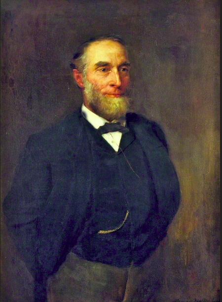

Sir Richard Durning Holt, 1st Bt
Richard Durning Holt was born in 1868 and died on 22 March 1941. He was a British Liberal politician and served as Member of Parliament for Hexham between 1907 and 1918. Richard Holt was educated at Winchester public school and New College, Oxford. He was elected as a Liberal for Hexham and became part of the “Holt Cave” of Liberal MPs who opposed David Lloyd George’s 1914 budget. He was preceded by Wentworth Beaumont and succeeded by Douglas Clifton Brown.
Richard Durning Holt was born in 1868 into one of Liverpool’s richest and most respected mercantile families. The Holt family were prominent Unitarians who had made a substantial philanthropic contribution to their city.
His father Robert was a cotton broker, leader of the Liberal Party on the city council, and Liverpool’s first Lord Mayor in 1892–3.
His uncle was the founder of Alfred Holt and Company, managers of the Ocean Steam Ship Company — the world‑famous Blue Funnel Line.

Robert Durning Holt (1832–1908).
Oil on canvas by Percy Bigland, ca. 1891.
Public domain via Sudley House
under a Creative Commons Zero licence (CC0)
Richard Durning Holt the British Liberal politician read more here.